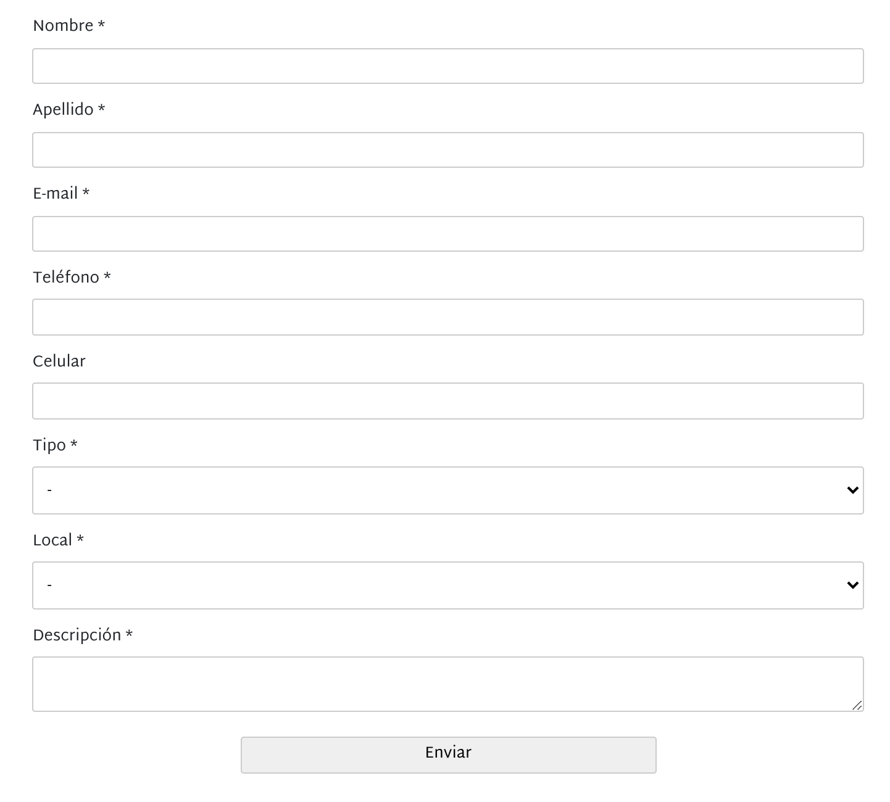

Diego Kiedanski
2nd August 2021

Imagínese si tuviésemos que trabajar con el nombre completo.
En un proyecto exitoso:
Considere las siguientes cadenas DIFERENTES:
Una herramienta muy poderosa es poder dividir un string en un carácter.
Ejemplo de distancia entre kitten y sitting es 3.
Tenemos que LabelEncode los siguientes strings:
banana / anana